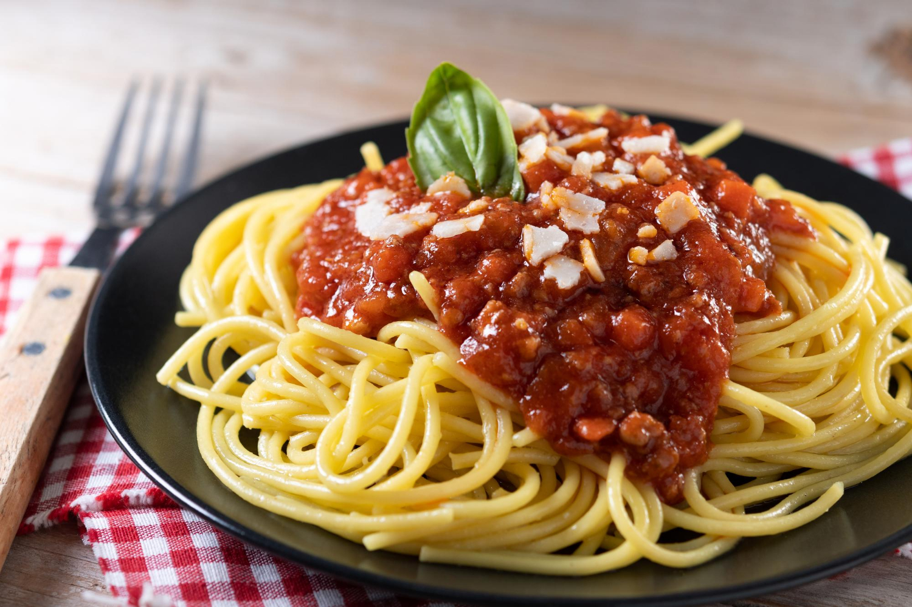

Inicio
Spaghetti a la Bolognesa

Descripción
El spaghetti a la boloñesa es un clásico italiano amado en todo el mundo. Originario de Emilia-Romaña, combina spaghetti al dente con una rica salsa ragú de carne molida, tomate, zanahoria, apio y cebolla, cocinada a fuego lento con hierbas y vino.
Aunque el ragú tradicional se sirve con tagliatelle en Italia, la versión con spaghetti ha ganado una enorme popularidad internacional. Perfecto para compartir en familia, el spaghetti a la boloñesa es reconfortante, delicioso y una muestra de la autenticidad culinaria italiana, ideal para cualquier ocasión.
Ingredientes
Para la salsa boloñesa:
- 500 g de carne molida (mitad cerdo, mitad res).
- 1 cebolla mediana.
- 1 zanahoria.
- 1 rama de apio.
- 2 dientes de ajo.
- 800 g de tomates pelados o salsa de tomate.
- 150 ml de vino tinto.
- 2 cucharadas de aceite de oliva.
- 1 hoja de laurel.
- 1/2 cucharadita de orégano.
- Sal y pimienta negra al gusto.
Para la pasta:
- 400 g de spaghetti.
- Agua y sal para la cocción.
Para servir:
- Queso parmesano rallado.
- Hojas frescas de albahaca (opcional).
Elaboración paso a paso
- Picar finamente la cebolla, zanahoria, apio y ajo.
- En una sartén grande, calienta el aceite de oliva y añade la carne molida. Cocina a fuego medio-alto hasta que se dore bien, desmenuzando la carne con una cuchara.
- Añade la cebolla, zanahoria, apio y ajo picados a la sartén con la carne. Cocina a fuego medio hasta que las verduras estén blandas y la cebolla se vuelva transparente.
- Vierte el vino tinto y deja que se evapore el alcohol durante unos minutos. Luego, agrega los tomates pelados o la salsa de tomate, la hoja de laurel, el orégano, sal y pimienta.
- Cocina la salsa a fuego bajo durante 1-2 horas, removiendo de vez en cuando. Si es necesario, añade un poco de agua para obtener la consistencia deseada.
- Mientras se cocina la salsa, hierve una olla grande con agua y sal. Cocina el spaghetti según las indicaciones del paquete hasta que esté al dente.
- Escurre el spaghetti y agrégalo a la sartén con la salsa boloñesa. Mezcla bien para que la pasta se impregne con la salsa.
- Sirve caliente, espolvorea con queso parmesano rallado y, si lo deseas, decora con hojas frescas de albahaca.